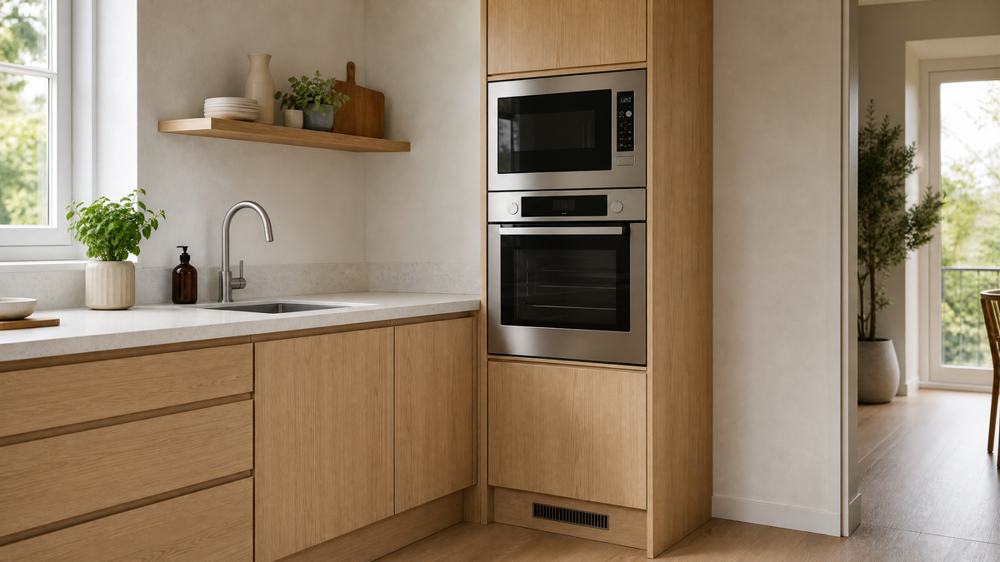
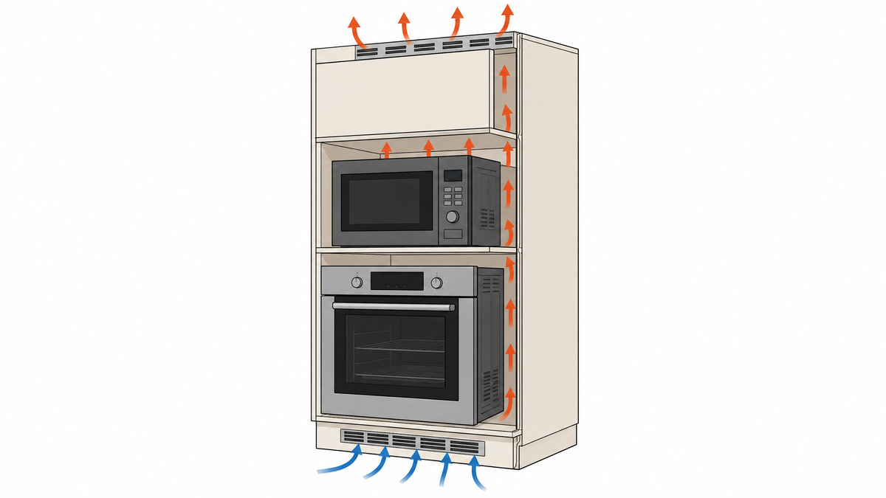
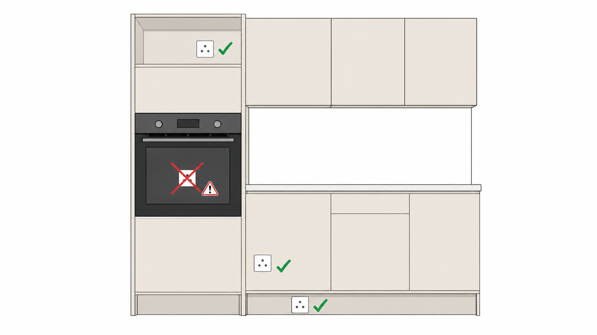

пенал под встраиваемую технику — это корпус 600×560 мм высотой 2116–2400 мм. В него заходят духовой шкаф (ниша 560–568 × 590–600 мм), СВЧ (380–450 мм по высоте) и кофемашина. Всё решают три цифры: зазор 40–90 мм за прибором, вентиляционные решётки суммарно от 200 см² в цоколе и антресоли, отдельная линия 3×2,5 мм² с автоматом 16 А. Ошибка в глубине на 20 мм или закрытый воздухообмен — это переделка на 15 000–40 000 руб. и снятие прибора с гарантии.
Когда колонна оправдана: считаем стену, а не рендер
Пенал занимает 600 мм по фронту — столько же, сколько база с ящиками, но забирает всю высоту до антресоли. Поэтому сначала считают свободную стену и остаток рабочей поверхности, потом выбирают технику.

| Длина стены под гарнитур | Что помещается | Рабочая поверхность |
|---|---|---|
| до 2200 мм | три базы по 600 мм, пенал не встаёт | 600 мм |
| 2400–2600 мм | пенал 600 + мойка 600 + плита 600 + база 450 мм | 450–600 мм |
| 2800–3200 мм | пенал 600 + мойка 800 + плита 600 + база 600–900 мм | 900–1200 мм |
| от 3400 мм | пенал 600 + мойка 800 + база 800 + плита 600 + база 600 мм | 1400–1600 мм |
Порог комфорта: между мойкой и варочной панелью остаётся 800 мм, оптимум — 1200–1600 мм. Если после пенала на рабочую зону приходится меньше 600 мм, колонна превращает кухню в коридор: шкаф есть, готовить негде.
Второй случай, когда пенал не нужен: кухня 8–9 м² с отдельно стоящим холодильником 600 мм у входа. Два высоких объёма подряд дают глухую стену 1200 мм по фронту и перекрывают свет из окна.
Размеры пенала: где теряются сантиметры
Считать нужно не фасад прибора, а корпус с боковинами 16 мм, зазорами и вентиляционным коридором. Нормы на корпусную мебель — ГОСТ 16371-2014.
| Параметр | Значение | Комментарий |
|---|---|---|
| Ширина корпуса | 600 мм | внутренний свет 568 мм при ЛДСП 16 мм |
| Глубина корпуса | 560 мм | с фасадом 578–580 мм, столешница 600 мм |
| Высота колонны | 2116 / 2200 / 2300 / 2400 мм | кратно 100 мм — дешевле в раскрое |
| Цоколь | 100–150 мм | съёмный, для доступа к розеткам |
| Антресоль | 300–500 мм | при потолке 2700 мм |
| Ниша под духовку | 560–568 × 590–600 мм | глубина 550–560 мм, зазор по паспорту |
| Ниша под СВЧ | 560–568 × 380–450 мм | фасад компактной модели — от 455 мм |
Стандартный встраиваемый духовой шкаф имеет фасад 595×595 мм и корпус глубиной 540–570 мм. Ниша 600×600 мм «на глаз» подходит не всегда: у большинства моделей требуется 560 мм по ширине (по 3–5 мм на сторону) и 590 мм по высоте, а за корпусом — воздушный зазор 40–90 мм.
Если пенал стоит вплотную к стене, зазор делают не воздухом, а выступом: корпус 560 мм + 40 мм до стены = 600 мм. Плинтус и соседняя мебель не должны перекрывать этот коридор.
Вентиляция: три отверстия, без которых духовка греется
Духовой шкаф отдаёт наружу 40–70% тепла через корпус и решётку над дверцей. Если корпус закрыт со всех сторон, температура внутри пенала поднимается до 60–80 °C, а предел для ЛДСП и эмалированных фасадов — 40–50 °C. Дальше расслаивается кромка, желтеет эмаль, а сервис отказывает со ссылкой на нарушение монтажа.
- нижнее отверстие — в цоколе, решётка 500×100 мм или два ряда по 250×100 мм;
- верхнее — в антресоли или в задней стенке над прибором, суммарно не меньше 200 см²;
- зазор за корпусом — 40–90 мм по паспорту модели, без утеплителя и монтажной пены;
- задняя стенка за духовкой — съёмная или с вырезом, не глухая;
- СВЧ охлаждается отдельно: 100 мм сверху, 50 мм с боков, канал не перекрывать полкой.
Вытяжка над плитой здесь не помогает: она забирает воздух из зоны готовки, а не из корпуса пенала. Воздухообмен кухни с электроплитой по СП 54.13330.2022 — не менее 60 м³/ч, с газовой плитой — 90 м³/ч. Для кухни 9 м² с потолком 2,7 м (24,3 м³) нужен постоянный приток: щель под дверью 10–20 мм или приточный клапан в окне.

Высота установки: эргономика в миллиметрах
Духовку поднимают так, чтобы противень вынимался на уровне груди. Низ камеры — 700–900 мм от чистого пола, верх — не выше 1500 мм.
| Сценарий | Низ духовки от пола | Низ СВЧ | Кому подходит |
|---|---|---|---|
| Высокая колонна, рост 175–185 см | 800–900 мм | 1200–1300 мм | основной вариант |
| Колонна 2116 мм, рост 160–170 см | 700–800 мм | 1100–1200 мм | верх СВЧ не выше 1300 мм |
| Пенал с кофемашиной | 800–850 мм | 1350–1450 мм | кофемашина выше СВЧ |
| Семья с ребёнком | 850–900 мм | 1300–1400 мм | дверца выше зоны доступа |
Если духовка стоит под варочной панелью в базе 600 мм, низ камеры получается 100–150 мм от пола — это 15–20 наклонов корпуса за одну готовку. Пенал в этом смысле не «красивее», а физиологичнее.
Высота рабочей поверхности при росте 165–175 см — 860–900 мм, при росте выше 185 см — 900–920 мм. Пенал режут под ту же линию, иначе верхняя кромка фасада уйдёт ступенькой.
Электрика: что тянуть до сборки мебели
Духовой шкаф 2,5–3,6 кВт, встраиваемая СВЧ 1,0–1,45 кВт, кофемашина 1,2–1,6 кВт. По СП 256.1325800.2016 и ПУЭ 7 (гл. 7.1) такие приборы питаются отдельными линиями от квартирного щита.
| Прибор | Мощность | Кабель | Автомат | Розетка |
|---|---|---|---|---|
| Духовой шкаф | 2,5–3,6 кВт | 3×2,5 мм² медь | 16 А | силовая 16 А с заземлением |
| СВЧ | 1,0–1,45 кВт | 3×2,5 мм² | 16 А | отдельная при сумме с духовкой больше 3,5 кВт |
| Варочная панель | до 7,2 кВт | 3×6 мм² | 32 А | клеммная колодка |
| Кофемашина | 1,2–1,6 кВт | 3×1,5 мм² | 10–16 А | 16 А |
УЗО 30 мА ставят на всю группу кухни, дифавтомат — на линию духовки. Розетку не прячут за корпусом прибора: при корпусе пенала 560 мм и глубине прибора 540–570 мм места под вилку нет. Рабочий вариант — соседний модуль, антресоль или цоколь с выводом кабеля и клеммником, к которому прибор подключают гибким шнуром.

- Разметить на стене ось пенала и высоту ниши — от чистого пола, а не от свежей стяжки.
- Вывести подрозетники духовки, СВЧ и кофемашины с запасом кабеля 300–400 мм.
- Проверить сечение и автомат: медь 2,5 мм² держит 25 А, но автомат ставят 16 А — под розетку.
- Смонтировать корпус и проверить диагонали: расхождение не более 2 мм.
- Собрать вентиляционные решётки в цоколе и антресоли до установки приборов.
- Вставить приборы, выставить зазоры по паспорту, затянуть крепёж.
- Включить на 30 минут и замерить температуру внутри пенала: норма — до 45 °C.
Пять ошибок, которые стоят дороже всего
| Ошибка | Что происходит | Цена исправления, 2026 |
|---|---|---|
| Глухой корпус без решёток | перегрев, отказ по гарантии, пожелтевшая эмаль | 8 000–15 000 руб. плюс стоимость прибора |
| Розетка за прибором | вилка не даёт вставить шкаф на 20 мм | 3 500–7 000 руб. за перенос |
| Ниша 595 мм «по фасаду» | прибор не входит или зажимает боковины | 6 000–12 000 руб. за перекройку |
| Пенал у стены без зазора | нет тяги, греется соседняя база | 4 000–9 000 руб. за новый корпус |
| Духовка на общей линии с чайником | выбивает автомат при одновременной работе | 3 000–6 000 руб. за отдельную линию |
Смета 2026: сколько стоит колонна целиком
| Позиция | Цена, руб. |
|---|---|
| Корпус пенала ЛДСП 16 мм, 600×560×2200 мм | 12 000–18 000 |
| Фасады МДФ в эмали, 600×2200 мм, 2 шт. | 20 000–34 000 |
| Фурнитура: петли, доводчики, направляющие | 3 500–6 000 |
| Вентиляционные решётки и короб | 1 200–2 500 |
| Электрика: линия 3×2,5 мм², автомат, розетка | 4 500–9 000 |
| Монтаж и подключение приборов | 5 000–9 000 |
Итого колонна без техники — 46 000–78 000 руб., это 18–25% стоимости гарнитура. Взамен освобождается модуль 600 мм под столешницей: 0,36–0,54 м³ закрытого хранения при высоте 2116–2300 мм и глубине 560 мм.
Частые вопросы
Можно ли поставить духовку в пенал глубиной 500 мм?
Только если модель прямо допускает монтаж в корпус 500 мм — таких единицы. Стандартный корпус прибора 540–570 мм плюс зазор 40 мм сзади. При пенале 500 мм духовка выступает за фасад на 60–70 мм или упирается в стену.
Нужна ли вентиляционная решётка, если духовка «с холодным фасадом»?
Нужна. Холодный фасад снижает нагрев дверцы, но корпус и задняя часть всё равно отдают тепло. Производители прописывают зазор 40–90 мм и вентиляционные отверстия в инструкции; без них гарантия на прибор не действует.
Можно ли объединить духовку и СВЧ на одной линии 16 А?
Можно, если суммарная мощность не превышает 3,5 кВт: духовка 2,2 кВт плюс СВЧ 1,0 кВт — нормально, духовка 3,6 кВт плюс СВЧ 1,45 кВт — нет. Практичнее вести две линии 3×2,5 мм² и не считать киловатты при каждой готовке.
Какая высота пенала оптимальна при потолке 2700 мм?
2300 мм корпус плюс цоколь 100 мм, сверху антресоль 300–500 мм. Остаётся зазор 100–200 мм до потолка: он нужен для монтажа и не создаёт «пылесборник» вплотную к перекрытию.
Что делать, если пенал уже собран без вентиляции?
Снять цоколь и вырезать отверстие под решётку 500×100 мм, снять антресоль и сделать верхний вырез не меньше 200 см², заменить глухую заднюю стенку за духовкой на съёмную. Работы на 2–3 часа и 4 000–9 000 руб. вместе с материалом.
Ставить ли пенал, если техника уже куплена и это СВЧ с грилем?
СВЧ с грилем и конвекцией греется сильнее обычной: нужен верхний зазор 100 мм и боковые по 50 мм, а ниша должна быть шире корпуса на 10–20 мм. Проверьте паспорт: у части моделей запрещён монтаж в закрытый шкаф без принудительной вентиляции.